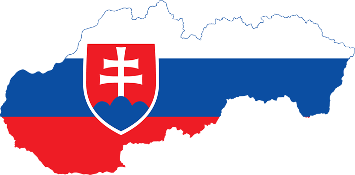

Toto je text červenou farbou.
Toto je text vypísaný fontom Arial Black a je modrou farbou.
Text, ktorý má veľkosť písma 20 pixelov (px, t.j. obrazových bodov)
Text, ktorý má oranžové pozadie
Nejaky text
Prvý kontajner (div)
Druhý kontajner (div)
Tretí kontajner (div)
Text oramovaný
Text oramovaný použitim CSS
Text vycentrovaný
Prvý kontajner (div)
Druhý kontajner (div)
Tretí kontajner (div)
Toto je 5 medzier za ktorými pokračuje tento text.